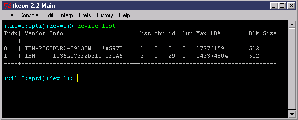
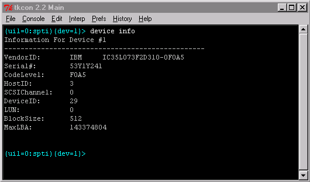

| device | count | |
| device | create | |
| device | get | callback |
| device | get | index |
| device | get | last_cdb |
| device | get | receive_count |
| device | get | timeout |
| device | get | read_xfer |
| device | get | xfer_mode |
| device | info | |
| device | islocked | |
| device | list | |
| device | lock | |
| device | remove | |
| device | rescan | |
| device | set | callback |
| device | set | index |
| device | set | timeout |
| device | set | read_xfer |
| device | set | xfer_mode |
| device | unlock |

This command gives a table of currently connected devices and reports
on vendor id, block, size and other information. Especially important
is the index (first column). This is the number that Niagara needs
to target a device. To target a device use the command:
device set index <index>Where index is one of the indexes in the enumerated list above. The command dsi can be used as a short hand alias to device set index (to save typing). After a device index is set, all CDB commands that follow will be targeted at the newly selected device. Another useful command is:
device countThis command returns the total number of devices connected (in the above case, 2 would be returned).
It is also possible to temporarily use a different
device index for a CDB command without using the device
set index command. To do this,
use the -dev
command option (available to every CDB command). Here are some examples:
inquiry -dev 1
read10 500 20 -dev 5

It is also possible to extract these fields individually:
device info blocksizeEspecially useful are device info maxlba and device info blocksize. Note that in some cases (such as starting Niagara with the drive spun down), the maxlb and blocksize are not accessible by Niagara. In these cases the maxlba nd blocksize will be set to zero and you will not be able to execute any CDB's that send/receive data in blocks. Performing a successful read_capacity will automatically update these fields for you.
device info channel
device info codelevel
device info host
device info lun
device info maxlba
device info serial
device info target
device info vendor
It is also possible to retrieve information about the last command execution
using:
device get receive_countThese two commands return the number of bytes returned by the drive during the last command and the last CDB sent to a device.
device get last_lba
device lock <index>
device unlock <index>
device islocked <index>
device set xfer_mode <mode>Available modes are: normal, hc, copy, random, random_hc, random_seed, random_seed_keyed, keyed, keyed_hc, inc, and inc_hc. The default mode is normal.
Another transfer option available is:
device set read_xfer <bool>This option tells the driver that performance on drive->host transfers is more important than seeing the data. When read_xfer is off, performance will increase with certain translators (iTech) at the expense of having the receive buffer filled with data. Other translators (ASPI, SPTI) do direct DMA xfer to Niagara's buffers and do not support this feature.
The last useful command related to transfer modes is the init command. The init command restores Niagara to its default transfer state (and also disables queuing and sets feedback levels to a default level).
To rescan the bus/loop for devices, use the following command:
device rescanTo manually add a device, the command is:
device create <channel> <host id> <target id> <lun>To remove a device, the command is:
device remove <index>